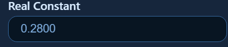
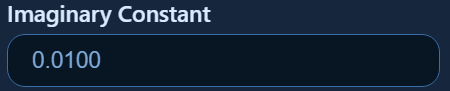
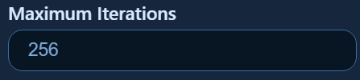

Help Page
| W/w | Move Up by 20 points |
| S/s | Move Down by 20 points |
| A/a | Move Left by 20 points |
| d | Move Right by 20 points |
| Shift + WASD | Move by 10 points |
| Alt + WAS | Move by 5 points |
| D | Move right by 5 points |
| ↑ | Imaginary Part + 0.01 |
| ↓ | Imaginary Part - 0.01 |
| → | Real Part + 0.01 |
| ← | Real Part - 0.01 |
| Shift + ↑↓→← | Adjust by 0.001 |
| Ctrl + ↑↓→← | Adjust by 0.0001 |
| + / = | Double the zoom |
| - | Halve the zoom |
Click and drag anywhere on the fractal to move around your view.
Before pressing Generate, move the mouse across the canvas to change the constant and the Julia Set

Enter the real part of the constant. If left blank then the default value will be 0.28.

Enter the imaginary part of the constant. If left blank, the default value will be 0.01.

Enter the maximum number of iterations to be used while generating the Julia set. This value must be an integer. If left blank, the default value is 256.
Select one of the four colouring schemes for Julia set. For high values of maximum iteration the Greyscale scheme is not recommended because it becomes very dim and difficult to distinguish from the black background.
Click Generate to create a Julia set using the values entered in the form.
Use the plus and minus buttons to zoom in or out of the fractal.